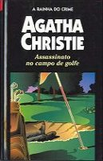

Assassinato no Campo de Golfe
Murder on the Links
Uma carta de um desconhecido, com um pedido de socorro, leva o detetive belga Hercule Poirot e seu ajudante Hastings à França, em busca de respostas para uma série de perguntas. Qual seria a relação entre os dois assassinatos cometidos com um intervalo de mais de 20 anos? Qual a ligação entre a mulher de um misterioso milionário e sua amante? Qual a relação entre um fio de cabelo, uma espátula ensangüentada, um cano de chumbo e um campo de golfe? Numa aventura repleta de mistérios, lindas jovens e amores frustados, Hercule Poirot ainda precisa enfrentar seu melhor amigo, apaixonado pela mulher que pode ser uma perigosa assassina.